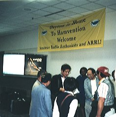
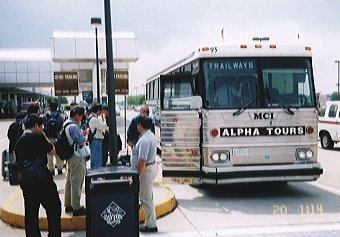
悪天候のため1日遅れでデイトン入りした日本のツアーグループ
空港にもHamvention歓迎の"横断幕"
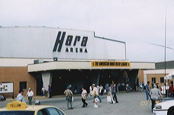
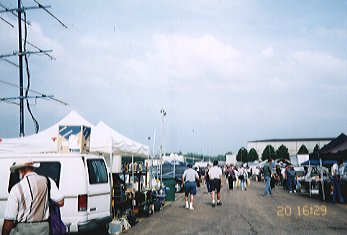
Hamventionの中央会場となっているHARA ARENAの入口／Flea Marketは駐車場
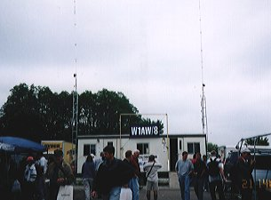
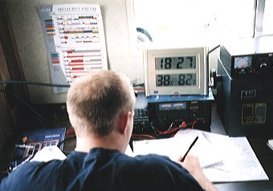
記念局・W1AW/8。内部ではCW/SSBの2局が同時運用されていた
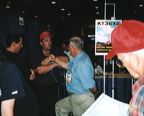
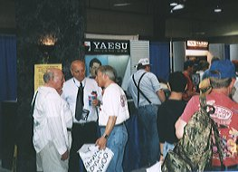
M2のブースでアドバイスするK6MYC・Mike／右はYAESUのブース前で談笑するN7NG(中央)

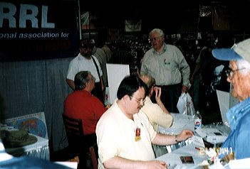
DXCCの申請を受付けているARRLのブース
ARRLのDXCCマネジャーのNC1L・Bill(赤シャツ)も加わってQSLチェック
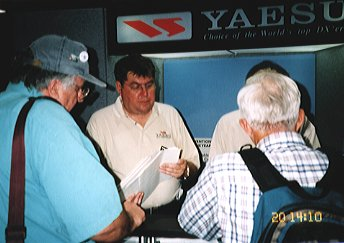
YAESUのブースに設けられた「OH2BH」のコーナー
TX0DXのQSLが手渡されていた
[EYEBALL QSO]
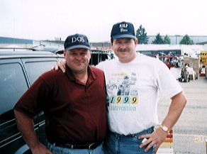
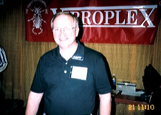
北米・東海岸のDXer K3LP(右)／Vibroplexの新製品"Code Warrior Jr"の設計者・K8FF

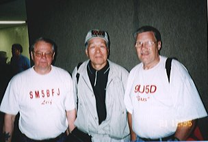
9U5D・Gas(左)とQSLマネジャーのSM0BFJ(SM5BFJ)・Leif
9U5Dは既にQRTしたが、次期任地となるZaireから近々9Q5TEでQRVすると
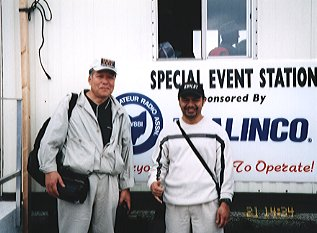
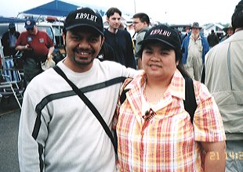
KH0(Saipan)出身のKB9LHT(右)／KB9LHTとXYLのKB9LHU